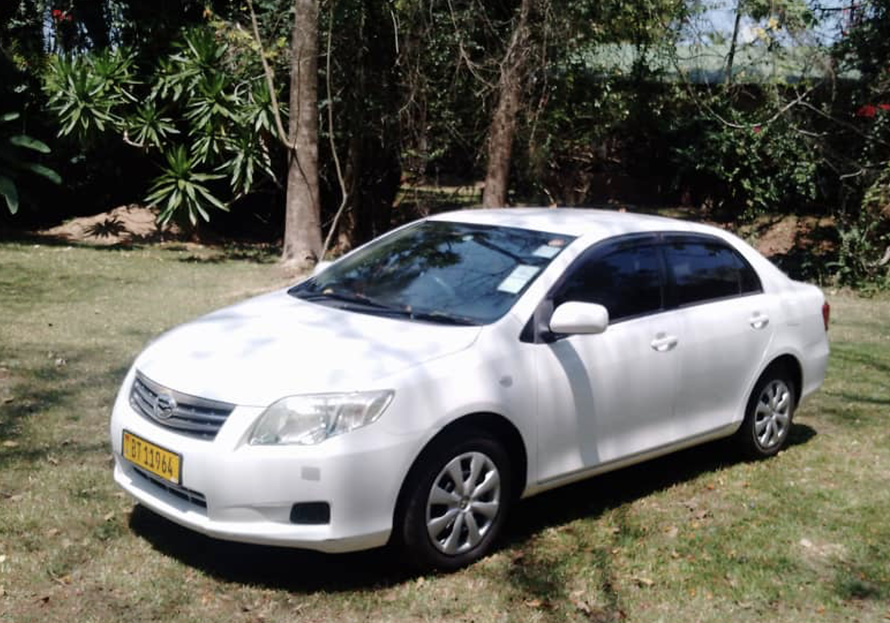
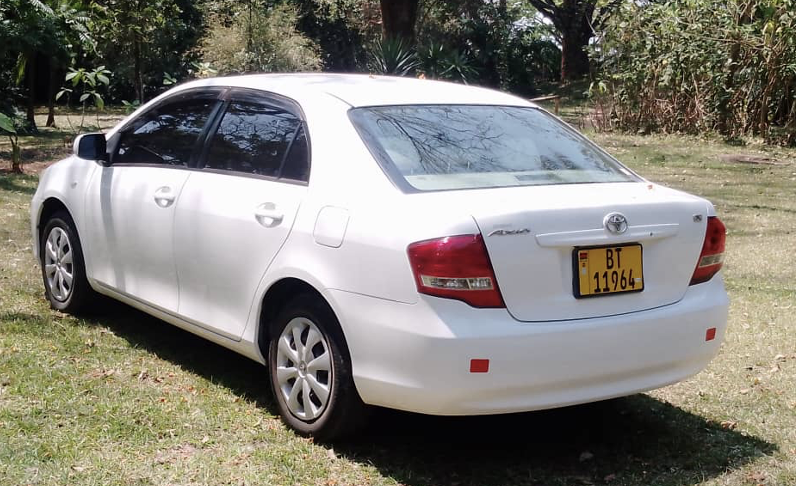
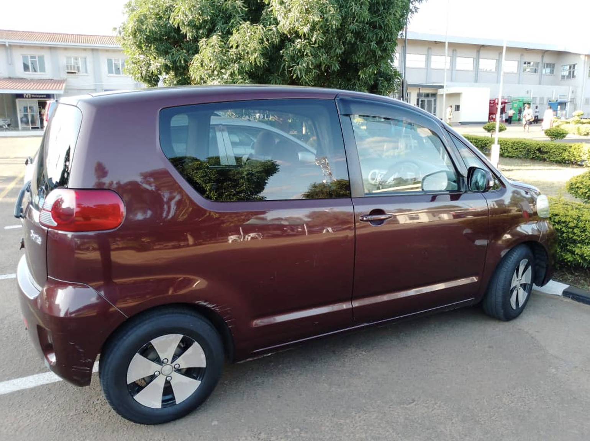
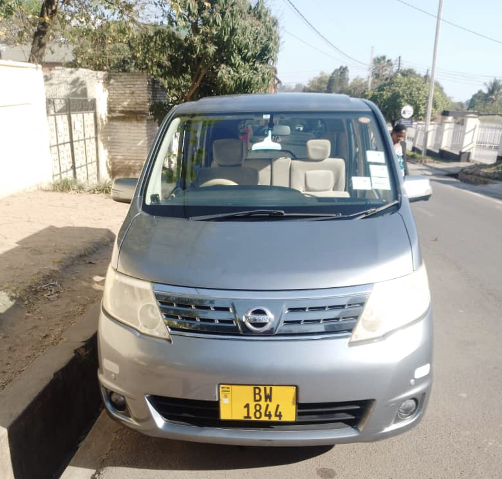
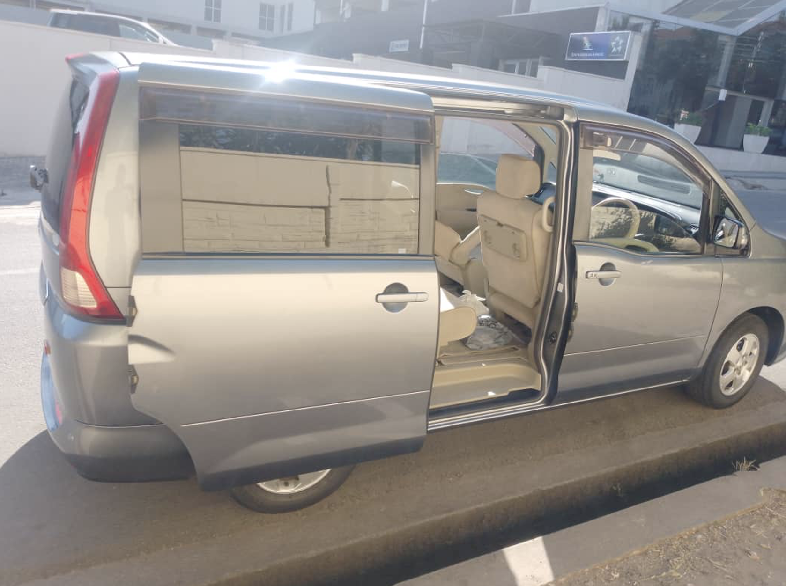
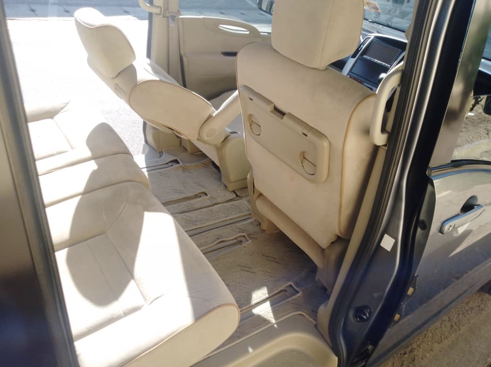
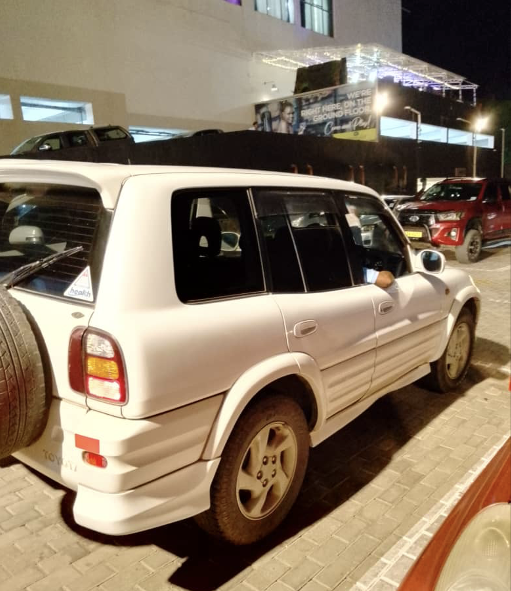
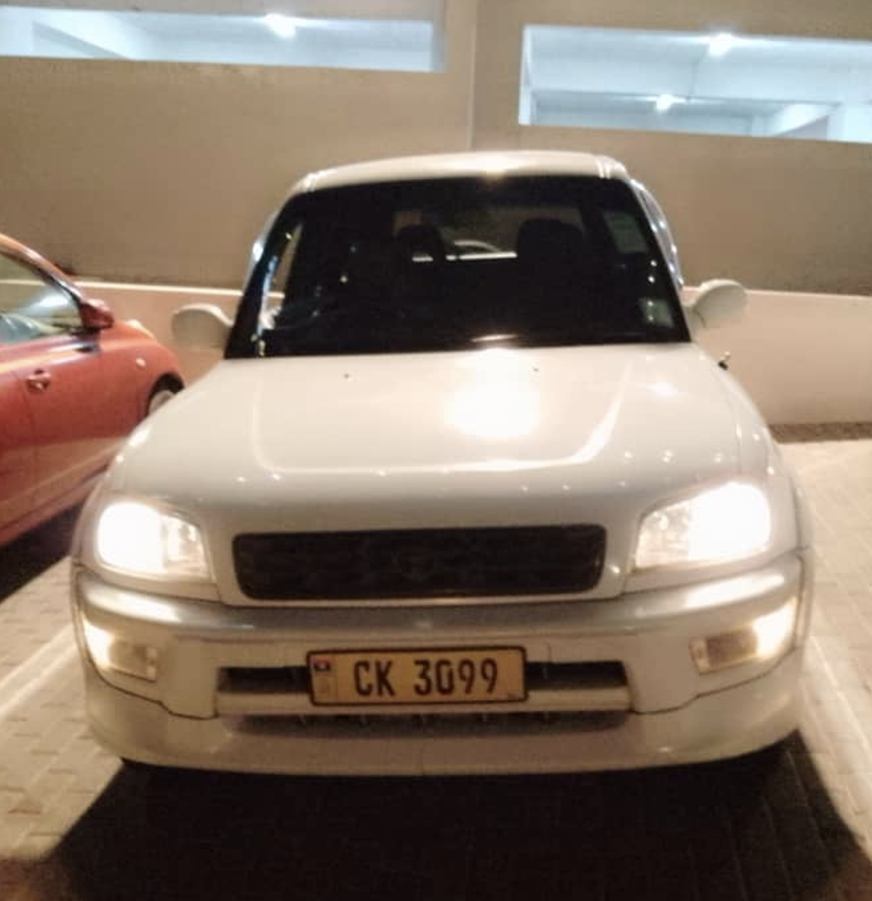

Welcome to Rex Taxi Services
We offer reliable, comfortable, and convenient transportation solutions in Blantyre, Malawi. Our well-maintained fleet and professional drivers ensure you have a pleasant journey every time.
Reliable, comfortable, and convenient transportation solutions in Blantyre, Malawi
We offer reliable, comfortable, and convenient transportation solutions in Blantyre, Malawi. Our well-maintained fleet and professional drivers ensure you have a pleasant journey every time.
Rex Taxi Services, established in 2010 by today's owner, a former Avis employe for 5 years, started with just one taxi and has grown into a trusted transportation provider with five well-maintained, air-conditioned cars. Our drivers are fluent in English, well-trained in safe driving practices, and possess excellent knowledge of the city's and country's geography.
For bookings from abroad, email us, and your driver will be ready upon your arrival at the airport. You can also call us, and we'll pick you up wherever you are.
Email: rexkajasiche@gmail.com
Phone & Whatsapp: +265 99 262 1949, +265 88 412 1414
Physical Address: P.O. Box 1, Chileka Airport, Blantyre, Malawi.
5 seats, petrol engine, automatic
 5 seats, petrol engine, automatic

7 seats, petrol engine, automatic
  4 seats, petrol engine, manual

5 seats, petrol engine, automatic
 